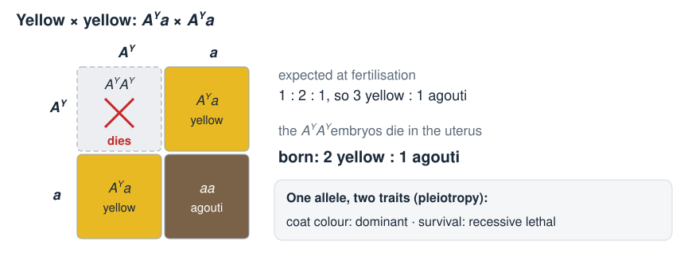
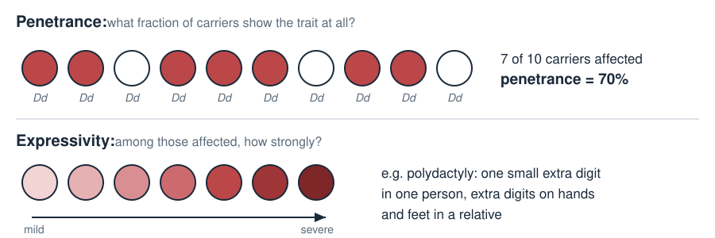
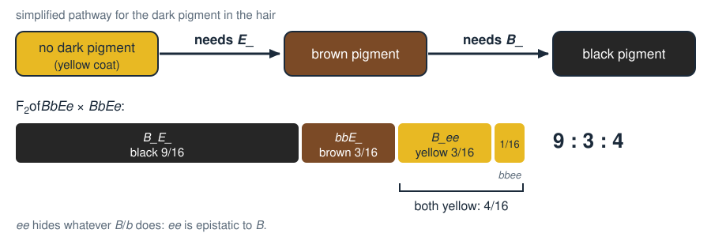

Dominance, multiple alleles, lethal alleles, penetrance and epistasis
Basic and molecular genetics (5MO104)
About this lecture
Mendel picked traits that behave simply: one gene, two alleles, one fully dominant, no interactions, no environment. Most traits are not that tidy. Today we keep Mendel’s two laws (segregation and independent assortment) and change the assumptions about how genotype becomes phenotype.
One gene: incomplete dominance and codominance, why some alleles are dominant at the molecular level, multiple alleles, lethal alleles, pleiotropy, penetrance and expressivity, and the environment.
Two genes: genes acting in the same pathway change the 9 : 3 : 3 : 1 into 9 : 3 : 4, 9 : 7, 12 : 3 : 1, 13 : 3 or 15 : 1. These are still 16ths, merged.
Strategy: given an F₂, turn the counts into 16ths, guess which classes merged, then test the guess with χ² (from Probability and the χ² test).
Book: Hartwell, the chapter on extensions to Mendel’s laws.
Dominance is a relation between two alleles
Complete dominance: the heterozygote looks like one homozygote (Pp is purple). F₂ phenotypes 3 : 1.
Incomplete dominance: the heterozygote is in between. Red × white snapdragons give pink F₁, and the F₂ is 1 red : 2 pink : 1 white: phenotype ratio = genotype ratio.
Codominance: the heterozygote shows both phenotypes in full. IAIB red cells carry both A and B antigens: blood type AB.
“Dominant” describes a pair of alleles, not one allele, and not how common it is.
Why is an allele dominant? The molecular view
Most loss-of-function alleles are recessive: half the normal protein is usually enough (haplosufficient).
Haploinsufficiency: half is not enough, so a loss-of-function allele is dominant (e.g. PAX6 and aniridia).
Dominant negative: the mutant protein spoils the normal one in a complex (e.g. mutant collagen chains in osteogenesis imperfecta).
Gain of function: the mutant protein does something new or too much (e.g. an over-active FGFR3 receptor in achondroplasia).
Multiple alleles
A population can carry many alleles of one gene, even though each diploid person carries at most two.
ABO blood groups (gene ABO, which encodes a glycosyltransferase):
Genotype
IAIA, IAi
IBIB, IBi
IAIB
ii
Blood type
A
B
AB
O
IA and IB are codominant with each other; both are dominant over i (no working enzyme). Three alleles give 6 genotypes but 4 phenotypes.
An allelic series: rabbit coat colour, C (full colour) > cch (chinchilla) > ch (Himalayan) > c (albino). Each allele is dominant over those to its right.
With n alleles there are n(n + 1)/2 genotypes: 3 alleles → 6, 4 alleles → 10.
Lethal alleles and pleiotropy: the yellow mouse

Cuénot (1905): yellow × yellow mice always gave yellow and agouti offspring, in a ratio near 2 : 1, never 3 : 1. Yellow mice never bred true.
The AYAY embryos die. AY is dominant for coat colour but recessive for lethality.
One allele affecting several traits is pleiotropy. Another example: the sickle-cell allele of HBB affects red cell shape, anaemia, organ damage and resistance to malaria.
A 2 : 1 ratio among the survivors of a monohybrid cross is the signature of a recessive lethal.
Penetrance and expressivity

Penetrance: the fraction of individuals with a genotype who show the trait at all. Incomplete penetrance can make a dominant trait skip a generation in a pedigree.
Expressivity: how strongly the trait shows in those who have it. Polydactyly can be one small extra digit, or extra digits on all four limbs.
BRCA1: carriers of a pathogenic variant have a much higher lifetime risk of breast and ovarian cancer, but not all of them get cancer. They inherit a raised risk, not the disease.
Causes: other genes (modifiers), the environment, and chance.
The environment changes the phenotype
The same genotype can give different phenotypes in different environments.
Himalayan rabbits (chch) and Siamese cats carry a temperature-sensitive allele of the gene for tyrosinase, the first enzyme in melanin synthesis.
The enzyme works at lower temperature and fails at body-core temperature, so only the cool extremities (ears, nose, paws, tail) are dark.
Shave a patch on a Himalayan rabbit’s back and keep it cold while the fur regrows: the new fur grows in dark.
In humans, phenylketonuria (PKU): the same genotype gives severe intellectual disability on a normal diet and near-normal development on a low-phenylalanine diet.
Genotype sets a range of possible phenotypes. The environment picks a point in that range.
Two genes, one pathway: epistasis
Epistasis: the genotype at one gene hides the effect of another gene. Mendel’s 9 : 3 : 3 : 1 is still there underneath; some classes look the same.

Recessive epistasis, 9 : 3 : 4. Labrador retrievers, BbEe × BbEe: ee dogs make no dark pigment in the hair, so they are yellow whatever their B genotype. ee is epistatic to B; B is hypostatic.
Complementary genes: 9 : 7
Both steps of the pathway are needed; losing either one gives the same mutant phenotype.
How many phenotype classes? Two classes from a dihybrid cross points to 9 : 7, 13 : 3 or 15 : 1; three classes to 9 : 3 : 4, 12 : 3 : 1 (or 9 : 6 : 1); four to 9 : 3 : 3 : 1.
Convert to 16ths: count ÷ total × 16.
Match to sums of 9, 3, 3, 1. For example 4 = 3 + 1, 7 = 3 + 3 + 1, 12 = 9 + 3, 13 = 9 + 3 + 1, 15 = 9 + 3 + 3.
Test the candidates with χ², with df = number of classes − 1.
Explain it with a pathway, and check with a test cross if you can.
Worked example. Sweet pea F₂: 382 purple, 290 white (672 plants).
Expected 378 and 294: χ² = 4²/378 + 4²/294 = 0.097, df = 1, p = 0.76. Fits.
Under 3 : 1 instead: χ² = 118, p ≈ 10⁻²⁷. Rejected.
Summary
Concept
Key fact
Incomplete dominance
heterozygote in between; F₂ 1 : 2 : 1 (snapdragon)
Codominance
heterozygote shows both; IAIB = type AB
Molecular dominance
haploinsufficiency, dominant negative, gain of function
Multiple alleles
many alleles in a population; ABO; allelic series
Recessive lethal
2 : 1 among survivors; yellow mouse AY
Pleiotropy
one gene, several traits
Penetrance / expressivity
whether a genotype shows / how strongly
Environment
temperature-sensitive tyrosinase in Himalayan rabbits
Epistasis
one gene hides another; F₂ ratios are merged 16ths
Ratios
9 : 3 : 4, 9 : 7, 12 : 3 : 1, 13 : 3, 15 : 1
Strategy
counts → 16ths → candidate ratios → χ² → pathway
Where this leads
Pedigree analysis (next unit): incomplete penetrance, variable expressivity and new mutations make human pedigrees harder to read.
Mutation and complementation: the 9 : 7 cross is a complementation test. Two recessive mutants that give a wild-type F₁ have mutations in different genes.
Linkage: when two genes are close on a chromosome, the dihybrid classes are no longer 9 : 3 : 3 : 1, for a quite different reason.
Complex traits: many genes and the environment together give continuous variation.